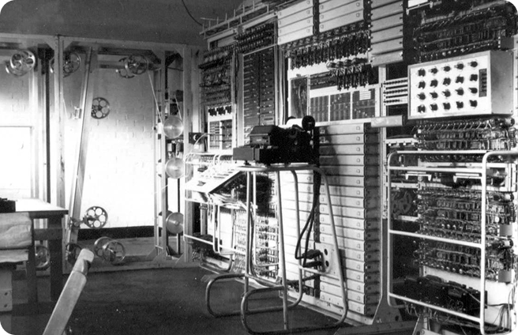

Criada por Vannevar Bush nos anos 1930, foi uma das pioneiras no uso de circuitos e engrenagens para automatizar cálculos, abrindo caminho para os computadores modernos.

A cifra que guardava segredos de guerra e a máquina genial criada para quebrá-la. Mergulhe na história da criptografia nazista e da corrida para decifrá-la em Bletchley Park.

Uma versão aprimorada e mais poderosa do analisador diferencial, capaz de resolver problemas de engenharia ainda mais complexos para o esforço de guerra.

O gigante eletrônico ultrassecreto. Veja como o Colossus foi usado para decifrar as mensagens criptografadas do Alto Comando Alemão, acelerando o fim da Segunda Guerra.